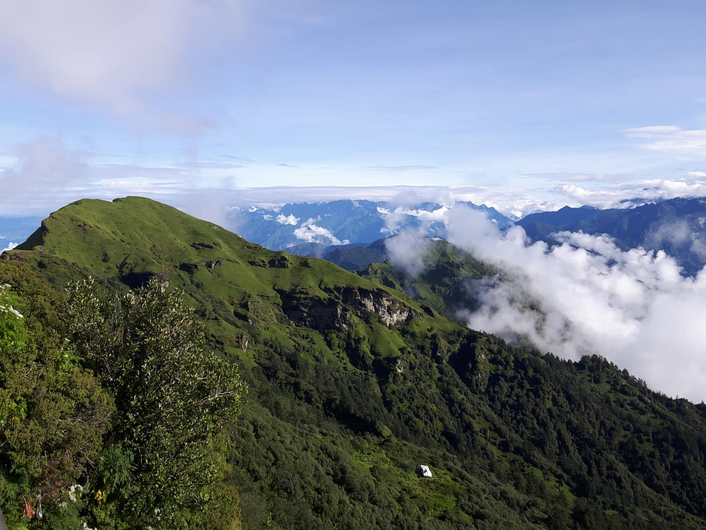
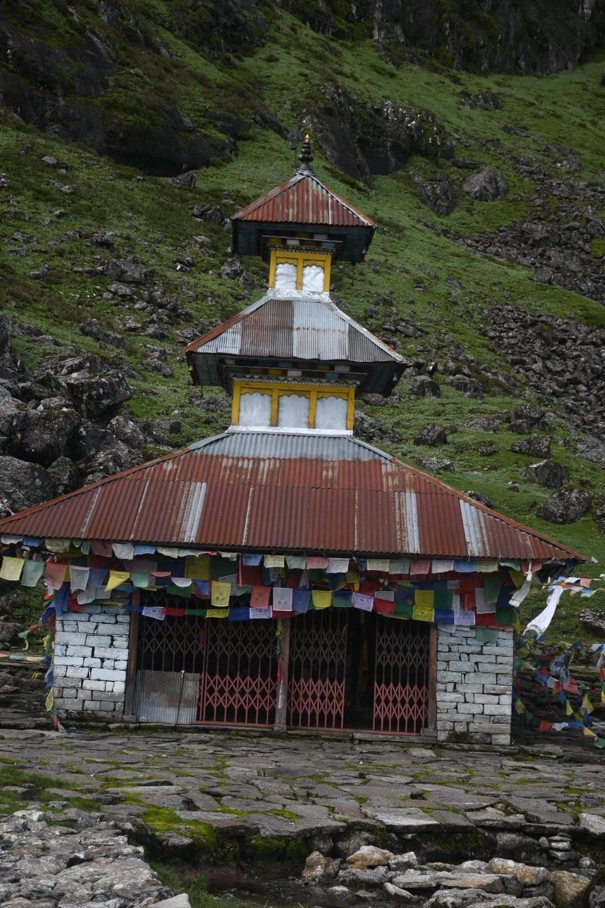
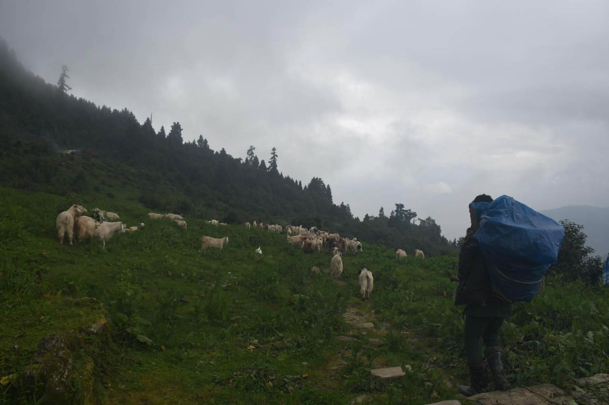
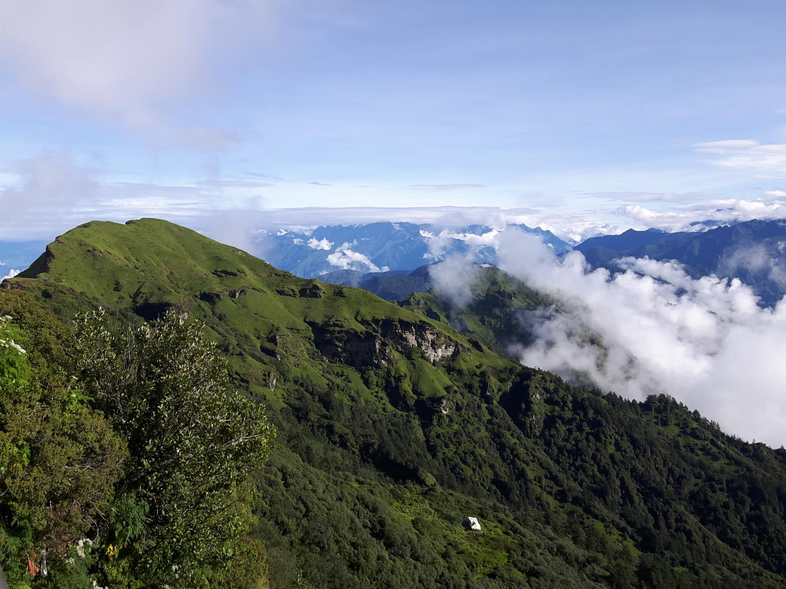
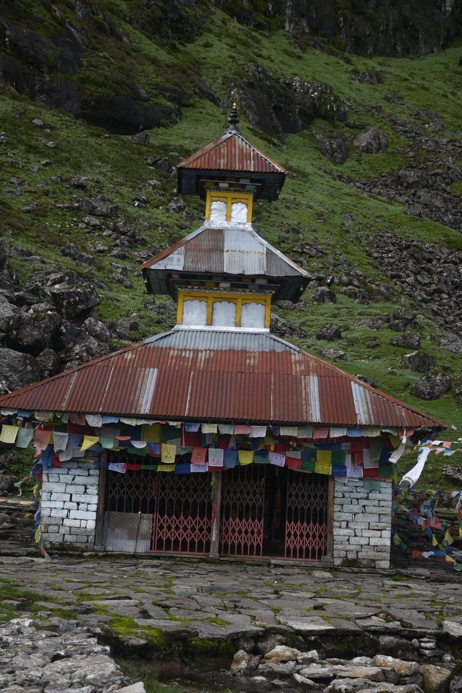
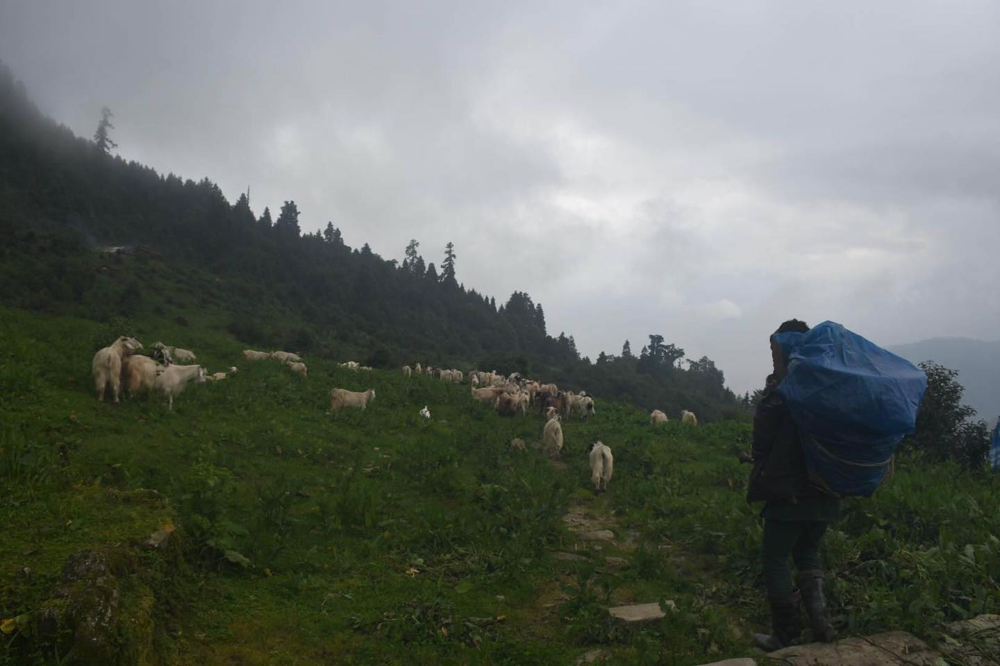

Panch Pokhari lake is the famous tourist destination for nature lovers as well as Pilgrims. It is a group of 5 Hindu holy lakes in the Sindhupalchowk District of the central Himalayan region of Nepal. It is in the Panchpokhari Thangpal Rural Municipality ward no. 3 Bhotang. It is the 9th highest altitude wetland in the world where birds can be found. It is situated at an elevation of about 4100m above sea level. This is a famous Hindu pilgrimage site in Nepal. The lake in Janai Purnima is a popular destination for Hindu and Buddhist pilgrims. This area is in the Lantang National Park and contains a surprising amount of forests and wildlife too. During Janai Purnima, local devotees visit this lake wearing traditional dresses and other devotees around Nepal visit this pilgrimage. The famous Jhankri Naach can be observed here during Janai Purnima. People take a dip in the pool before they change their holy thread or wear it. You will see the two pilgrim houses by the pond and the Lord Shiva shrine. aThe trail in Panch Pokhari Trek is mystical and calm, even at uncertain weather. According to religious beliefs the dip in Panch pokhari allows replenish yourself with purity and composure. Moreover, the journey to Panch Pokhari is the ideal one for spiritual and peaceful people too. Panch Pokhari is a relatively unexplored, pristine and best-kept secret of nature. It has amazing beauty and moreover, indescribable sceneries.
The Panchpokhari region is home to Hyolmo, Tamang, Sherpa, and Gurung communities. Panchpokhari has natural as well as cultural diversity. Therefore Panchpokhari trekking is also very important for cultural tourism. Panchpokhari is short-distance trekking from Kathmandu. At the same time, Panchpokhari can be considered an important center of attraction in Langtang National Park. It is the base camp of various mountains of the Jugal Mountain range.
The alpine region is represented by Makalu Barun National Park HIGH ALTITUDE WETLANDS OF NEPAL HIGH ALTITUDE WETLANDS OF NEPAL Rhododendron shrub and Juniperus shrub. The open pasture is dominated by species like Sunpati (Rhododendron anthopogon), Bhale sunpati (Rhododendron lepidotum) Bikh, (Aconitum spicatum), Potentilla microphylla, Marcha (Senacio species), Kyashar (Meconopsis species), Primula species, Pakhnved (Bergenia ciliate), Kakoli (Fritillaria chirsosa) etc. The lake area is the habitat for endangered species like Musk deer (Moschus crysogaster) IUCN Redlist –VU, Wild dog (Cuon alpines) IUCN Redlist-EN and Snow leopard (Uncia uncia) IUCN Redlist -VU. Site comprises mamm like Large eared Pika (Ochotona macrotis), Royles Pika (Ochotona roylei), Himalayan fox (Vulpes spp.), Grey wolf (Canis lupus), Wild dog (Cuon alpines) etc. Altogether 32 plant species with 17 family and 26 genera have been recorded in the area. Rosaceae is the dominant family with 4 species, followed by Asteraceae, Ericaceae, Polygonaceae and Primulaceae with 3 species each. The potential endemic plants found in area are Carex himalaica and Ranunculus himalaicus. Threatened species such as Bikh (Aconitum spicatum) - IUCN Redlist-VU, Pakhenved (Bergenia ciliate), Somlata (Ephedra gerardiana), Kakoli (Fritillaria cirrhosa) and Kyasar (Meconopsis paniculata) are also found in the area.
Best Season To Visit
The best season to go to Panchpokhari is the spring season and autumn season. At this time Panchpokhari shows its magical form. Spring and autumn are the best months for Panchpokhari trekking as there is not much rain, not much snow, and relatively less winter.
If you want, you can visit Panchpokhari in any month. This trekking is a moderately difficult route. Therefore, Panchpokhari is an evergreen destination for tourists who can cope with common problems.
Making the trip towards to Panch Pokhari surreal feeds you the amazing moment of Life. This lets you both the adventurous walk and pilgrimage at the same time because of the steep and slippery the way you pass through, the more it rewards you the heavenly sceneries with along. The colorful flowers and the differently structured lush jungles make the journey more romantic and exciting. There we found the very specific settlement of the Sherpa and Tamang people in the middle of the way, providing accommodations to the visitors, which make arrival through the restless journey. Otherwise, we needed to carry out our own essentials like food and tent with our self-due to the lack of stable hotels and tea houses around the way.
But Near Panch Pokhari there are no facilities of Accommodation so we suggest you to be prepared before traveling to Panch Pokhari.
Activities To Be Done
Trekking
Panch Pokhari trekking is a non-tourist trekking trail in Nepal. This ( five lakes)trekking offers beautiful Himalayan views including the Gauri Shanker, Dorje Lakpa, Langtang Himalaya range, Jugal Himalayan range, Rolwaling Himalayan range, Tibetan Himalayan range, etc and also the pristine nature with district culture. Also, the Panch Pokhari stands for 5 holy ponds and Hindus religiously respect the place.
Yoga and Meditation
Yoga is a universal concept that brings scattered things together. It has been traditionally practiced for thousands of years in the Himalaya regions. The Yoga that we have today has been innovated by Lord Shiva, Lord Budhha, great sage Patanjali and Yogis. Mediation is a must-do activity in our daily lives. It gives us calmness, peace of mind and a sense of well-being. It also helps us to have better relationships, better health, and a better life.
Nepal is one of the best places in the world to practice Yoga and Meditation. It has many beautiful scenic places where tourists can practice yoga and meditation themselves. Nowadays Many institutes are also offering Yoga and meditation classes in a clean, peaceful and astounding environment.
Camping
Camping is an outdoor activity involving overnight stays away from home in a shelter, such as a tent. Typically participants leave developed areas to spend time outdoors in more natural ones in pursuit of activities providing them enjoyment.to be regarded as “camping” a minimum of one night is spent outdoors, distinguishing it from day-tripping, picnic, and other similar short term activities. Moreover, camping can be enjoyed through all four seasons.
Panch Pokhari camping trek through untouched traditional villages in spectacular Himalayan landscapes. Ultimate trekking experience in an off-the-beaten-path through untouched wilderness and unspoiled settlements in the mountain of Nepal. This trek to Panch Pokhari at the base of Jugal Himal also offers pristine mountain views, rich culture, and genuine adventure. This spectacular region certainly offers a combination of rich cultural heritage, unsurpassed beauty, and biological diversity as you trek to a group of high altitude holy lakes, sacred to Buddhist and Hindu people.
Sightseeing
Sightseeing in Nepal is a popular activity. Nepal is one of the best countries for sightseeing, with its long history, fascinating art, and distinctive and varied architecture. The sights in the Panchpokhari are something you’d never fed of. Moreover, the very beautiful views of Dorje lakpa, Phurbu Chhyachu, Madiya, Jugal Himal, Rolwaling and Langtang range can be seen from Panch Pokhari.
Religious Merits
Every year, on the occasion of Janai Purnima, hundreds of pilgrims from around the country pay a visit to the ponds. The festival of Janai Purnima usually falls in August. It is the festival when the Brahmin people of Nepal change their Janai, which they wear around the body. They go to the Panch Pokhari, takes a bath in ponds and also they change their Janai. As, the ponds are situated inthe shadow zone of Jugal Himal, the ecological system is of diverse nature. So, it adds more reason to go for camping trek as it promotes green tourism.
How To Reach?
There are two main ways to reach Panch Pokhari.
One can reach to Melamchi Via Kathmandu ( which is about 68 Km far from Kathmandu) in a bus that is available from old Buspark after passing through Banepa, Dhulikhel, Lamidanda and Kunta on the way. Alternatively, Melamchi can be reached through Sankhu of Kathmandu (Melamchi is About 38 Km far from Sankhu) upon which you have to pass through Jaharisanga and Bahunpati.
First Way to Panch Pokhari: After reaching Melamchi, one can Trek for two-three hours to reach Panch Pokhari.
Second Way to Panch Pokhari: Move for Chautara (The district headquarters of Sindhupalchok) and then walk for two-three days through village and forest of Bamboo and Pine while enjoying the views of Gaurisankar, Langtang and Jugal Himal through Syaule and Chyochyo Hill to reach Panch Pokhari.

 




